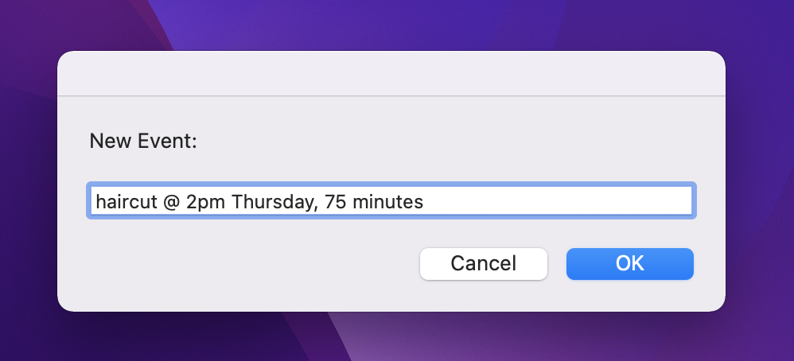
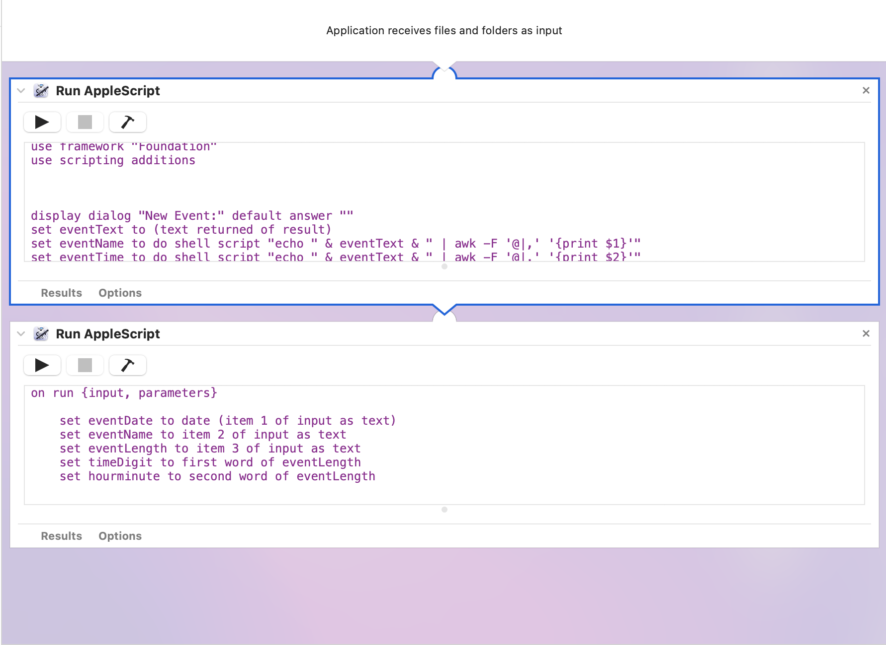

Quickly adding calendar events with help from a little applescript
Because I'm too lazy to open the calendar application
There are many kinds of information I enjoy tracking and reviewing in a digital format. Time is not one of them.
After almost two decades of using them in earnest, I’ve never quite clicked with digital calendars. When circumstances permit, I’ll always enjoy paper ones (especially comically large desk pads and wall calendars). But I can’t ignore the two main benefits of digital versions — reminders and scheduling with others. So I’ve been stuck with ical, google, and outlook calendars over the years and cursed every time I needed to use it.
One day during the never-ending pandemic I was frustrated enough and bored enough to make it a little less painful by scripting something little to make it easier to add calendar events using mostly natural language with a simple keyboard shorcut.
(Apple already offers something similar with its “Create Quick Event” function in Calendar, but it requires opening and foregrounding the Calendar app to use.)
How it works
In any application, I enter my keyboard shortcut and a dialog box appears:

I then enter the new calendar item using mostly natural language in the following format, using the @ sign and a comma as separators:
event name @ event time , duration
- The event name can be of any length and will appear in the calendar entry title field.
- The event time can include any 12h or 24h time (e.g. 7am, 14:30), day of the week or a calendar date. Entering a day of the week will place the event on the next instance.
- The event duration can be entered as minutes, hours, or by using the term “all day”.
Here’s an example: 
Click OK and the event will automatically (and quietly in the background) be added to your default calendar with your default alert settings.
The scripts
There are two scripts which work together behind the scenes: one to parse the information from the text input, and another to create the calendar entry based on that parse.
Parsing the entered text
The first script makes use of the @ and comma separators to parse the entry and assign values to variables eventName, eventTime, and eventLength:
use AppleScript version "2.4"
use framework "Foundation"
use scripting additions
display dialog "New Event:" default answer ""
set eventText to (text returned of result)
set eventName to do shell script "echo " & eventText & " | awk -F '@|,' '{print $1}'"
set eventTime to do shell script "echo " & eventText & " | awk -F '@|,' '{print $2}'"
set eventLength to do shell script "echo " & eventText & " | awk -F '@|,' '{print $3}'"
set theDate to my getDatesIn:(eventTime)
considering numeric strings
if AppleScript's version < "2.5" then
set theDate to my makeASDateFrom:theDate
else
set theDate to theDate as date
end if
end considering
# Date String Output
set outputDate to (my formatDate:(theDate) usingFormat:"MM-dd-y hh:mm a")
return {outputDate, eventName, eventLength}
------------------------------------------------------------
--» HANDLERS
------------------------------------------------------------
on formatDate:theDate usingFormat:formatString
if class of theDate is date then set theDate to my makeNSDateFrom:theDate
set theFormatter to current application's NSDateFormatter's new()
theFormatter's setLocale:(current application's NSLocale's localeWithLocaleIdentifier:"en_US_POSIX")
theFormatter's setDateFormat:formatString
set theString to theFormatter's stringFromDate:theDate
return theString as text
end formatDate:usingFormat:
------------------------------------------------------------
on getDatesIn:aString
# Convert string to Cocoa string
set anNSString to current application's NSString's stringWithString:aString
# Create data detector
set theDetector to current application's NSDataDetector's dataDetectorWithTypes:(current application's NSTextCheckingTypeDate) |error|:(missing value)
# Find first match in string; returns an NSTextCheckingResult object
set theMatch to theDetector's firstMatchInString:anNSString options:0 range:{0, anNSString's |length|()}
if theMatch = missing value then error "No date found"
# Get the date property of the NSTextCheckingResult
set theDate to theMatch's |date|()
return theDate
end getDatesIn:
------------------------------------------------------------
# Required before 10.11
on makeASDateFrom:theNSDate
set theCalendar to current application's NSCalendar's currentCalendar()
set comps to theCalendar's componentsInTimeZone:(missing value) fromDate:theNSDate # 'missing value' means current time zone
tell (current date) to set {theASDate, year, day, its month, day, time} to ¬
{it, comps's |year|(), 1, comps's |month|(), comps's |day|(), (comps's hour()) * hours + (comps's minute()) * minutes + (comps's |second|())}
return theASDate
end makeASDateFrom:
------------------------------------------------------------
on makeNSDateFrom:theASDate
set {theYear, theMonth, theDay, theSeconds} to theASDate's {year, month, day, time}
if theYear < 0 then
set theYear to -theYear
set theEra to 0
else
set theEra to 1
end if
set theCalendar to current application's NSCalendar's currentCalendar()
set newDate to theCalendar's dateWithEra:theEra |year|:theYear |month|:(theMonth as integer) ¬
|day|:theDay hour:0 minute:0 |second|:theSeconds nanosecond:0
return newDate
end makeNSDateFrom:
Creating the calendar entry
The second script tells opens the apple calendar application and tells it what to do with the results of the first script:
on run {input, parameters}
set eventDate to date (item 1 of input as text)
set eventName to item 2 of input as text
set eventLength to item 3 of input as text
set timeDigit to first word of eventLength
set hourminute to second word of eventLength
if hourminute is equal to "minutes" then
tell application "Calendar"
activate
set theCurrentDate to current date
set newEvent to make new event in calendar "your_calendar_name_here" at end with properties {summary:eventName, start date:eventDate, end date:(eventDate + (timeDigit * minutes))}
end tell
else if hourminute is equal to "hours" or hourminute is equal to "hour" then
tell application "Calendar"
activate
set theCurrentDate to current date
set newEvent to make new event in calendar "your_calendar_name_here" at end with properties {summary:eventName, start date:eventDate, end date:(eventDate + (timeDigit * hours))}
end tell
else
tell application "Calendar"
activate
set theCurrentDate to current date
set newEvent to make new event in calendar "your_calendar_name_here" at end with properties {summary:eventName, start date:eventDate, end date:eventDate, allday event:true}
end tell
end if
return input
end run
(Note that you’ll need to swap “your_calendar_name_here” for the name of your calendar in the above script three times.)
I’m sure there’s a way to combine these two scripts into one (and perhaps shorten them as well), but since I only dabble in applescript I took a shortcut and simply called them sequentially in an automator application.

Simply save it as an application, assign a keyboard shortcut (I use ⌘+.), and you’re good to go. (Note: the first time you use it in any application MacOS will prompt you for permission.)
Limitations
Could I have simply purchased Fantastical or any other better-than-stock calendar tools? Would they have provided more and better options? Yes, but I’m overly particular (at times) and cheap (at most times) and was curious to see if I could make this work. And for scheduling my own life and my own work, this does the trick.
But I’ll note that this script cannot select from multiple calendars, adjust alerts, send invites, or add locations and notes as written. But it probably can be extended to offer at least some of those capabilities by:
- choosing an additional separator
- setting a new variable in the first script (e.g. eventNotes)
- calling that variable in the second script
I might futz around with that in the future. If anyone else wants to give it a whirl, go ahead and let me know how it works.
I’ll also note that this is, of course, limited to mac computers and will only work as long as applescript is supported.
Thanks are in order
I haven’t worked much in applescript before, so I couldn’t have built even this tiny thing without the help of others who have kindly shared their work with the world. This calendar trick offered a very easy template to build from, and forms the core of the second script above. Christopher Stone provided the incredible applescript date parser which does all the lifting in the first script.
Frustrations along the way
The primary obstacle is that Apple’s automator display dialog action only allows for a single text entry field. I thought I’d be able to make a dialog with three or four fields I could tab between, and assign their respective outputs to variables that the calendar could interpret, but no such luck.
Someone on the keyboard maestro forums attempted this workaround using a series of dialogs and selecting from lists, but it ends up being just as much work as creating a new calendar entry manually.
So I needed to be able to use a single text box to enter strings of variable length, and assign different segments to different variables. I ended up using awk for this, which let me assign arbitrary separators without too much trouble.
Choosing separators
To be truly natural-language, I’d use as separators the words we use in English all the time — in two hours, for three minutes, on Saturday — but that also mean I could never use these same words in the event name. And this limitation would really be constraining; event titles like meet Erin in the park or buy gift for my sister would be off the table because the parser would treat the prepositions here as separators. I’m certain there’s a way around this but it wasn’t worth going down that rabbit hole for such a simple, only-for-me tool. Hence the use of @ and , as separators that I assume I’d never want to input as part of the actual name, time or duration.
Making duration work
Other solutions I saw had just (1)left the calendar default event time, (2) had a select-from-list option, or (3)coded in a fixed amount per event, using this for 1 hour:
end date:(eventDate + (60 * minutes))
But I wanted to be able to specify the length of any event in my text input. Based on the code above, I could simply change 60 to a numeric variable — but that would mean I’d need to enter my duration in minutes all the time, which felt a bit unnatural. Same story with using hours; entering .25 for events with 15-minute lengths would just feel antithetical to this entire silly project.
What I needed was a way to take a string like 1.5 hours or 22 minutes , split it into two parts (the digit and the unit-word), and analyze accordingly. I naively assumed it’d be a simple task for a script to distinguish between numeric and non-numeric input and work with the data that way, but this proved to be a dead-end (or at least a long and much-winding-path).
But applescript does natively understand the concept of a word. Because my text entry includes a single space between digit and unit, these are automatically parsed as distinct words, and I could simply select them separately:
set timeDigit to first word of eventLength
set hourminute to second word of eventLength
This seemed somehow too easy and a bit of a hack, but I wasn’t complaining.
Now that I pulled these two apart, I could just sub them into the original script, right?
end date:(eventDate + (timeDigit * hourminute))
Not so fast!
Even though the value of hourminute will be either hours or minutes, for some reason applescript treats the variable value minutes or hours different from when I write those words directly into the script.
So I instead decided to just duplicate the calls: one tell calendar…. where the code would be (timeDigit * minutes), and another tell calendar… where it would say (timeDigit * hours).
Now I just needed two conditionals:
if hourminute is equal to "minutes” then...
else if hourminute is equal to "hours" or hourminute is equal to "hour” then...
This also made it possible to handle entries containing either the singular or plural hour and hours (1 hour, 2 hours).
All-day events
When I got to this point, the franken-script I’d created worked well except it wanted to treat all duration entries as numbers; what about all day events?
I tried using a single if statement when setting variables (e.g. if second word contains “hour” or “hours” or “minutes” then…) but that didn’t work. I ended up needing to write multiple less elegant and more specific statements using is:
if second word is "minutes"...
if second word is "hours"...
and then letting the all-day be the default/elsewhere condition.